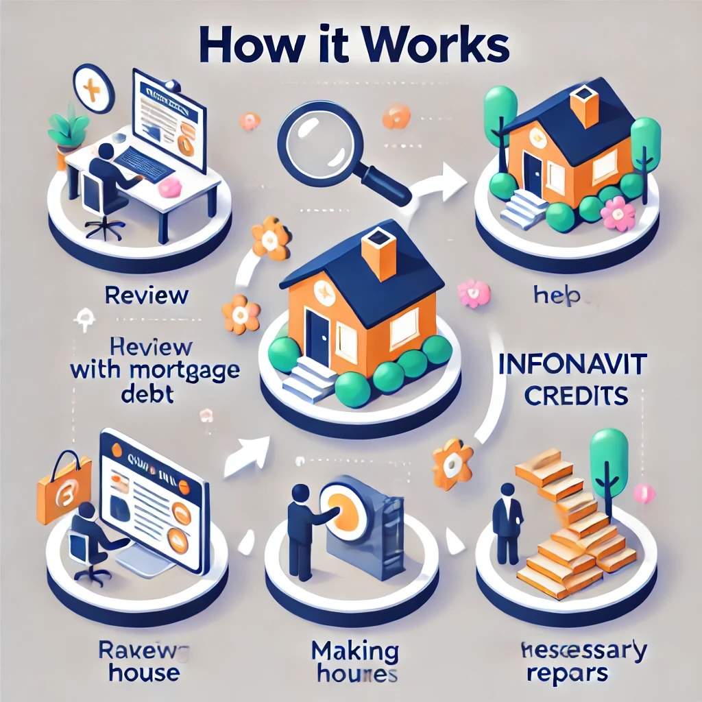

¿Tienes adeudo en tu crédito Infonavit? Te ayudamos a vender tu casa, pagar tu deuda y evitar un mal historial crediticio.
Agenda una revisión gratuitaEn Solucasa, creemos que nadie debería perder su hogar y su tranquilidad financiera por dificultades con su crédito. Sabemos que enfrentar una deuda hipotecaria puede ser abrumador, y por eso estamos aquí para ofrecer una solución rápida y segura. Nuestro equipo se dedica a ayudarte a recuperar parte de tu inversión, evitar un mal historial crediticio y brindarte una nueva oportunidad de tranquilidad.
Nuestra misión es ofrecer a los propietarios una solución justa y efectiva para vender su casa, pagar su deuda y evitar las consecuencias de un mal crédito.
Sabemos que enfrentar una deuda es complicado. Por eso en Solucasa hemos diseñado un proceso fácil que te permite vender tu casa rápidamente, saldar tu deuda y, lo más importante, evitar un mal historial crediticio. Estos son los pasos:
Primero, revisamos tu casa y tu deuda para asegurarnos de que califique para nuestro programa. No te preocupes, este proceso es rápido y gratuito. Solo evaluamos las condiciones generales y el estado de tu crédito.
Si tu casa califica, hacemos las reparaciones básicas necesarias para que pueda calificar para el crédito Infonavit del nuevo comprador. Nos encargamos de todo, sin complicaciones para ti.
UUna vez que tu casa esté lista, la ponemos en venta. Con esto, pagamos tu deuda, te ayudamos a evitar problemas con tu historial crediticio y recuperas una parte de tu inversión. Es una nueva oportunidad para comenzar de nuevo sin deudas.
Hemos ayudado a muchos propietarios a salvar su patrimonio y encontrar una nueva oportunidad. Aquí te dejamos algunas historias reales de personas que, como tú, estaban enfrentando una situación complicada y encontraron en Solucasa la solución que necesitaban.
Juan P."Gracias a Solucasa, pude vender mi casa y pagar mi deuda. Al principio estaba muy preocupado, pero ellos hicieron todo más fácil. Recuperé algo de mi dinero y, lo más importante, no tengo un mal historial de crédito."
María S."Estaba a punto de perder mi casa por un adeudo con Infonavit. Solucasa me ayudó a arreglarla, la vendimos y pude salir de esa deuda. Me dio mucha tranquilidad saber que mi crédito está limpio."
Aquí respondemos algunas de las dudas más comunes que nuestros clientes suelen tener. Si tienes otra pregunta, no dudes en contactarnos.
El proceso completo suele durar un promedio de 3 meses, dependiendo del estado de la propiedad y el mercado.
La evaluación de tu casa es completamente gratuita. Solucasa solo cobra cuando se realiza la venta.
Casas con crédito Infonavit que necesitan reparaciones menores para ser atractivas a nuevos compradores califican para nuestro programa. No realizamos reparaciones estructurales mayores.
El dinero se devuelve una vez que la venta se haya realizado y la deuda sea pagada. En promedio, nuestros clientes recuperan alrededor de $100,000 MXN.
En nuestro blog, compartimos información valiosa para propietarios que están enfrentando dificultades con sus créditos, así como guías prácticas sobre cómo mantener un buen historial crediticio y aprovechar mejor tu patrimonio. ¡Conoce más!
Te explicamos los pasos para evitar perder tu casa y las opciones que tienes para salir adelante.
¿Tienes dudas o quieres saber si tu casa califica para nuestro programa? Ponte en contacto con nosotros y te daremos toda la información que necesitas sin ningún compromiso.
En Solucasa, respetamos tu privacidad. Toda la información proporcionada se maneja de acuerdo con nuestras políticas de privacidad y se utiliza exclusivamente para ofrecerte el mejor servicio.